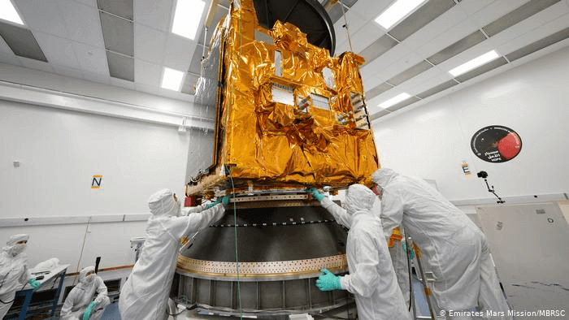

Hope: A New Frontier For the Arab World
Mihir Kulkarni 8/2/2020

The UAE mission crew assembles the Hope probe and prepares it for the stresses of space flight. The orbiter will measure the Martian atmosphere and climate for a full Martian year, or sol.
Emirates Mars Mission/MBRSC
The UAE mission crew assembles the Hope probe and prepares it for the stresses of space flight. The orbiter will measure the Martian atmosphere and climate for a full Martian year, or sol.
Emirates Mars Mission/MBRSC
The United Arab Emirates (UAE) successfully launched its Hope Orbiter on July 19, marking the Arab world’s first mission to Mars. The orbiter was launched aboard a H-IIA rocket at the Tanegashima Space Center in Japan.
The rocket was initially scheduled to depart in the prior week, but was delayed due to unfavorable weather conditions. The Al Amal (Hope) probe will orbit around Mars to measure its climate and atmosphere, with its mission control located in Dubai.
The probe will be the first to send back measurements of the climate for a full Martian year, or sol, with the ultimate goal of gaining a complete understanding of the weather on the Red Planet. CNN reports that it may also help the world understand what happened to the water that was once on Mars.
"The data gathered by the probe will add a new dimension to the human knowledge," UAE Vice President Sheikh Mohammed bin Rashid Al Maktoum said. "This is our latest contribution to the world."
Along with being a major scientific achievement, the launch also holds a large symbolic value to the small nation. Mission control in Dubai performed the first ever launch countdown in Arabic, and the UAE now joins the short list of countries who have sent a mission to Mars. Hope’s 2021 arrival will also occur as the UAE celebrates 50 years as a nation, and many believe the success of the mission will allow the UAE to develop a reputation as one of the world leaders in technology.
The details of the mission make it all the more impressive. The UAE’s space agency was established just six years ago in 2014, although the country had previously worked with South Korea to launch satellites. According to The Conversation, a typical Mars Mission takes around 10 years to complete, but the UAE managed to launch successfully in six. Additionally, the average age of the project team was 35, with every member from the UAE.
Although its direct purpose is to measure Martian climate, the Hope Probe may serve an even greater role. The mission has coincided with significant growth in the nation’s STEM sector, with over 50 research papers regarding space being published in the last six years. Additionally, LiveScience reports that a successful mission could inspire the next generation of Emiratis to delve deeper into the field.
“More students in the UAE have enrolled in graduate science degree programs; more funding is available to scientists in the country; and research looks like a more attractive career than it did before this mission took off,” University College researchers Ine Steenmans and Neil Morisetti said.
However, it remains to be seen if the mission will be a complete success. Mars missions fail around 40% of the time, and Hope still has many millions of miles to go before it reaches its destination. Although it may have not sent back any measurements yet, the mission has given this small nation something very important: Hope.
Cover Photo: (JAXA)